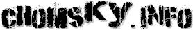

|
12 Great Thinkers of Our Time
New Statesman, July 14, 2003
|
|
The charge of both anti-Americanism and anti-Semitism is regularly made by propagandists of the new world order against those who do not happen to share their enthusiasm for biennial invasions of sovereign states and the spreading of neoliberalism by B-52 and cluster bomb. What the likes of Michael Gove, Barbara Amiel and Melanie Phillips cannot explain away, however, is the inconvenient reality that some of the most outspoken opponents of their world-view are either American or Jewish, or very often both. The international antiwar movement owes much to the efforts of Gore Vidal, Ramsey Clark, Michael Parenti and Howard Zinn. But the greatest of their number is Noam Chomsky, who has spent more than four decades warning of the danger that US imperialism poses to the peace and security of the world.
Born in Philadelphia in 1928, the son of Russian immigrants who had strong pacifist leanings, Chomsky's early education was at a progressive school and at the city's Central High School. At the University of Pennsylvania, he studied mathematics and philosophy, as well as linguistics. Since completing his PhD in linguistics in 1955, he has taught at the Massachusetts Institute of Technology, where he was appointed Institute Professor in 1976. His contribution to linguistics is profound. His Syntactic Structures (1957) is considered to be one of the intellectual achievements of the 20th century. Chomsky pioneered the idea that each human child has an innate capacity to master the grammar and deep structure of language. His insight was based on the observation that children learn grammar at a rate far greater than can be explained by their extrapolating from examples given to them. They must therefore have an innate capacity not only to learn language but also to understand how it works. Because language acquisition is universal, all languages must share the same fundamental structure or "depth grammar". Chomsky's revolutionary work on grammar and language deeply influenced not only linguistics, but also cognitive science in general. It has had a major impact on his political thinking as well. What Chomsky offers is, in the words of the author Collin Coyne, an "account of international power exchange from the linguist's perspective". For Chomsky, the word "democracy" has two quite distinct meanings. According to the dictionary, a system is democratic to the extent that its citizens have ways to participate in decisions about public affairs. In the ideological sense of democracy, a society is deemed democratic by the US only if its business is run in a way that is subordinate to the interests of US business. Anyone still in doubt as to why Guatemala in the 1950s, Nicaragua in the 1980s and Yugoslavia in the 1990s were denied the label "democratic" by the US state department, despite the holding of free elections in these countries, need no longer be puzzled. Chomsky came to prominence as a social critic of US foreign policy during the Vietnam war. His first major political text, American Power and the New Mandarins (1969), was critical of a liberal intelligentsia that had supported the Vietnam conflict or, if it opposed it, did so not because it was wrong but because of the high level of US casualties. In the 1970s and 1980s, Chomsky was, together with John Pilger, one of the few to speak out on the "hidden" genocide in East Timor, where, over a 20-year period, Indonesian forces armed and supported by the US were responsible for the deaths of more than 200,000 people. As a non-Marxist, libertarian socialist, Chomsky embraced the fall of the Berlin Wall. At the same time, he understood the dangers that would be created by the new power vacuum. His fear that with the demise of the Soviet Union, the US military-industrial complex would seek out new enemies to justify its existence has been borne out by subsequent events. That it has done so successfully owes much to what Chomsky calls an "unholy alliance" between the US state and the corporate media". In works such as Manufacturing Consent (co-written with Edward Herman in 1983) and Necessary Illusions (1989), Chomsky challenged the orthodoxy that a "free press" acts as a "watchdog" in a capitalist democracy. He argued instead that by "framing their reporting and analysis in a manner supportive of established privilege and limiting discussion accordingly", the media help to preserve the status quo and the hegemony of global finance. Chomsky's understanding of the mechanics of US imperialism and his ability at all times to see the "big picture" have led him to oppose recent US military interventions in Kosovo, Afghanistan and Iraq, as well as President Bush's war on terrorism. As befits a true liberal, he has never compromised his belief in the freedom of speech, even to the extent that in 1980 he wrote the preface to a book by Robert Faurisson that doubted the truth of the Holocaust. In 40 years of writing about politics, Chomsky's errors of judtement-- he was wrong to think that the fall of communism in eastern Europe was a "triumph of the spirit" and that the west missed a "great opportunity" to be rid of Saddam Hussein in 1991-have been remarkably few. For anyone wanting to find out more about the world we live in, for anyone who does not understand why the US ignored the genocide in East Timor but intervened so aggressively in a low-scale civil war in Kosovo, there is one simple answer: read Noam Chomsky. He may be widely disliked by establishment commentators, but through exposing unpalatable truths about the way his country is run and by reminding us that US military spending protects not US citizens but the interests of the big US corporations, Chomsky has done his country and the world an invaluable service. This, together with his pioneering work in linguistics, makes him one of the great thinkers of this or any other time. |
|  |